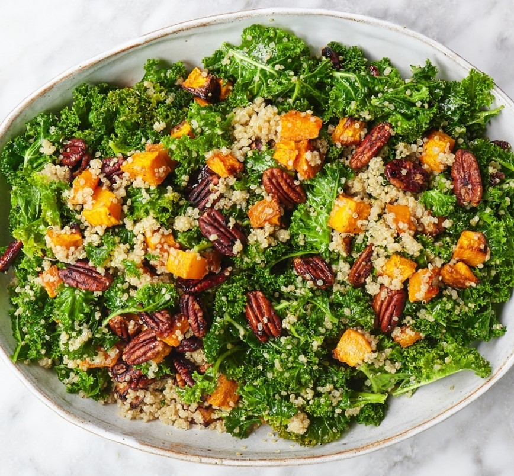

приготовление:
-
Разогрейте духовку до 190°C / с вентилятором 170°C.
-
1 тыкву (butternut squash) очистить, разрезать на кусочки, удобные для еды, выложить тыкву на противень, сбрызнуть ее оливковым маслом и посыпать солью и перцем. Перемешать, затем поместить в духовку и запекайть 35 минут, пока не станет мягкой и темноватой по краям.
-
В отдельную маленькую форму выложить 100 гр. пекана, полить 1 ст.л. оливкового масла, 1 ст.л. тамари соуса и 1 ст.л. кленового сиропа - перемешать. Поместить к тыкве в духовку и запекать все вместе еще 10–12 минут, пока орехи не подрумянятся.
-
Пока тыква и орехи запекаются, поставить вариться 3 порции киноа (примерно 130-150 гр.). Залить водой 1:2, посолить и варить под крышкой 15 минут.
-
У 150-200 гр. кейла удалить стебель, промыть, высушить, порезать на кусочки, удобные для жевания. Кейл полить 1 ст.л. оливкового масла, 1 ст.л. кленового сиропа, 2 ч.л. горчицы и 1 ст.л. яблочного уксуса. Чистыми руками массировать в течение 1–2 минут, пока листья не уменьшатся и не станут мягкими.
-
Когда тыква и орехи приготовится, все перемешать в большой минске и отрегулировать специи по вкусу.